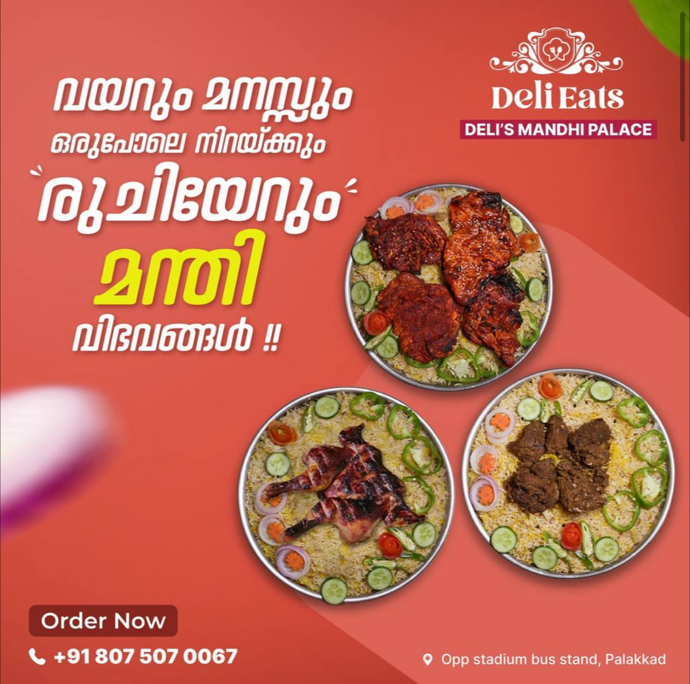

The ambiance of the restaurant can be casual, family-friendly, or upscale, depending on the establishment. Some restaurants may have special seating arrangements, such as floor seating with low tables, or outdoor seating for a more relaxed experience. The service is typically prompt and courteous, with knowledgeable and friendly staff who can explain the concept of unlimited Kuzhimanthi to you if you're unfamiliar. The star of the show, of course, is the Kuzhimanthi. They offer unlimited servings of chicken, mutton, or other types of meat Kuzhimanthi. The dish is cooked to perfection, with the meat being tender and flavorful, and the rice aromatic and flavorful. They also offer a variety of accompaniments, such as chutney, raita, and salad, to complement the Kuzhimanthi. Considering the unlimited nature of the meal, the price is usually reasonable or affordable. You can definitely get your money's worth if you have a big appetite. Overall, a restaurant offering unlimited Kuzhimanthi can be a great place for a hearty and satisfying meal. Look for reviews mentioning factors like waiting time, ambiance, variety of accompaniments, vegetarian options, and parking availability to choose the best spot for you.
